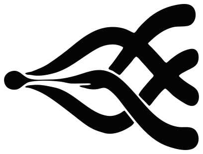
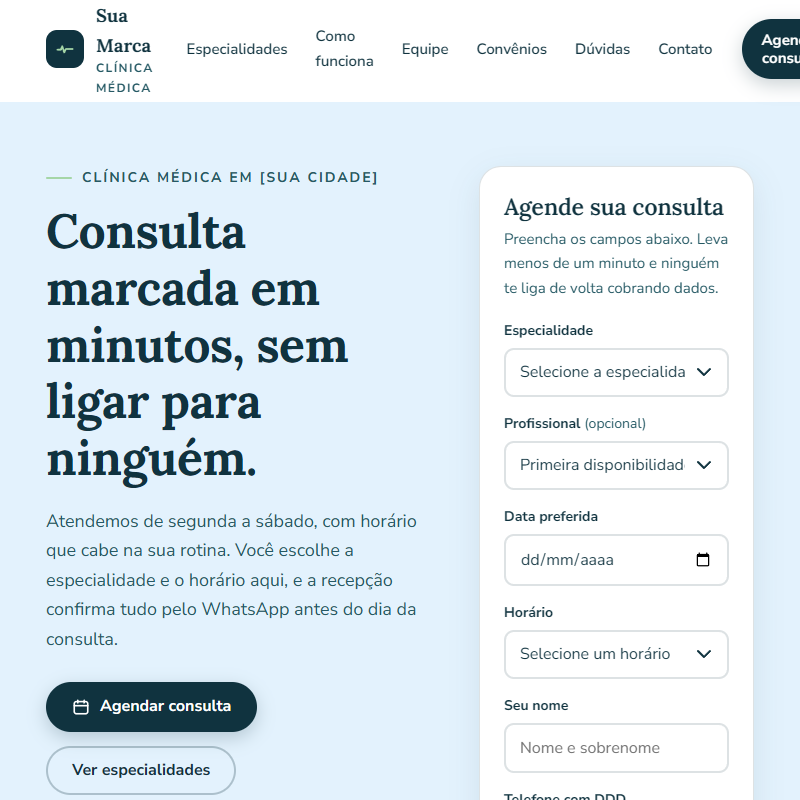
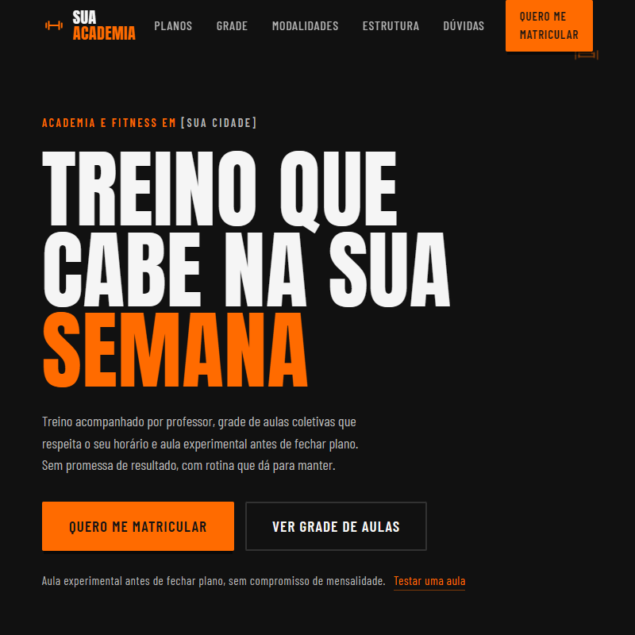
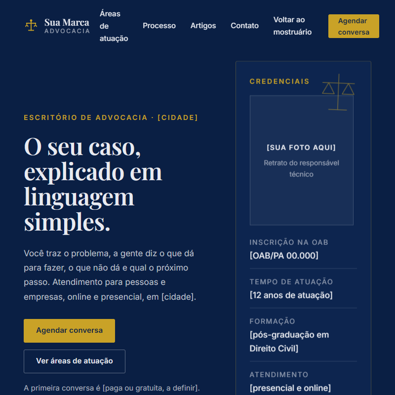
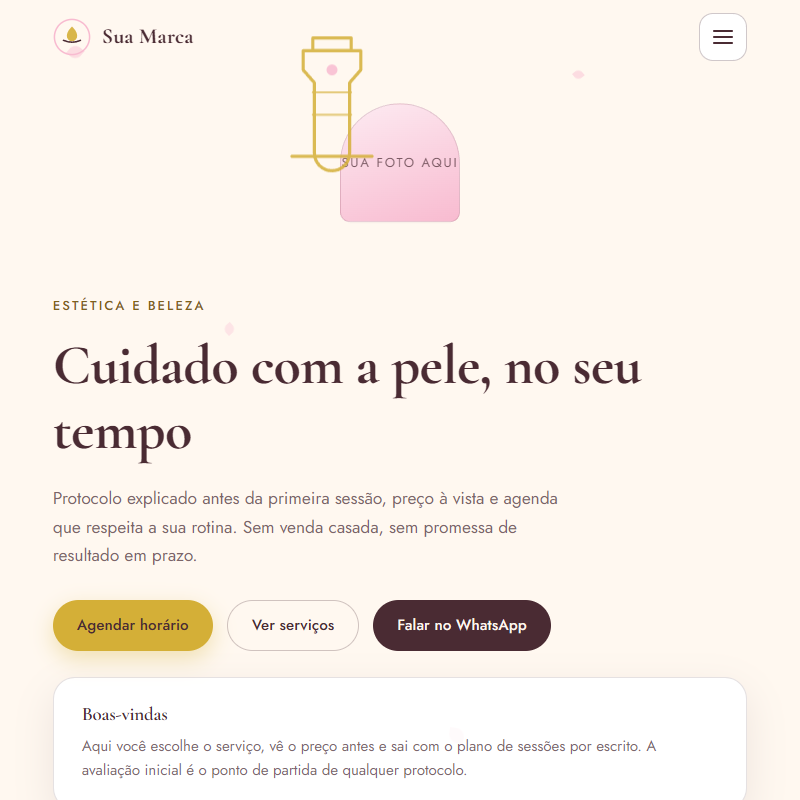
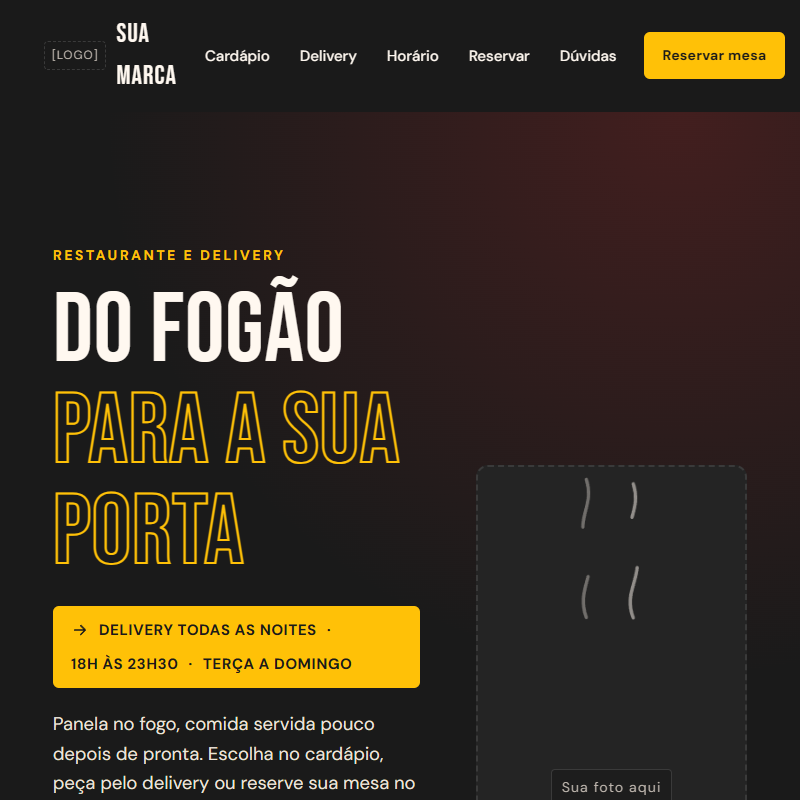
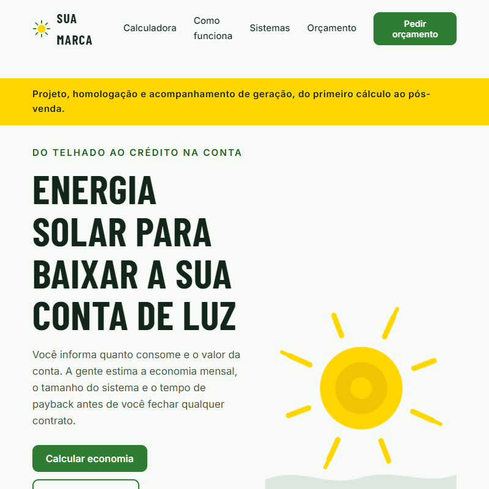
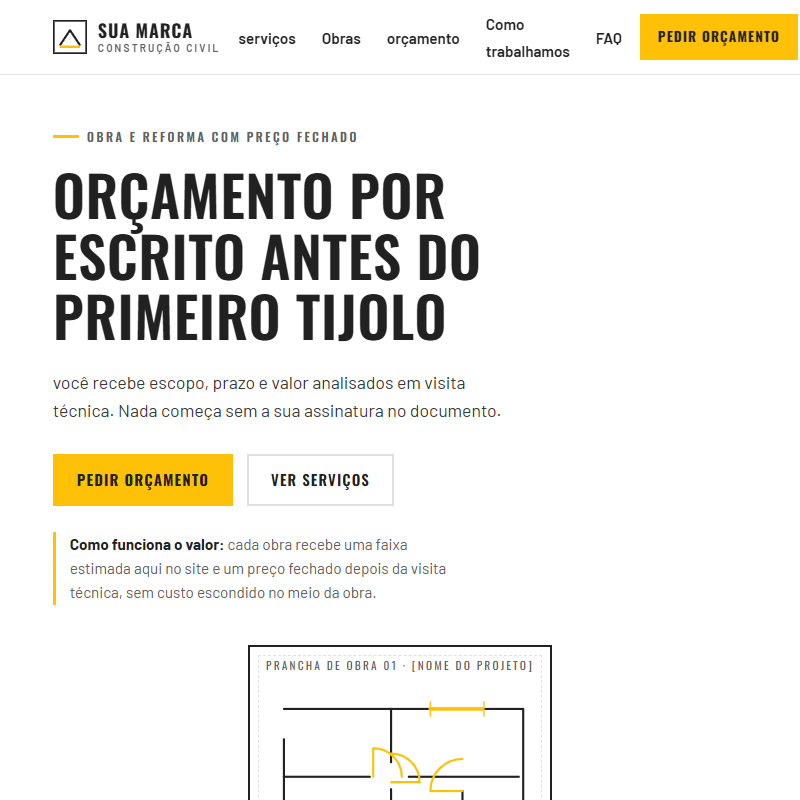
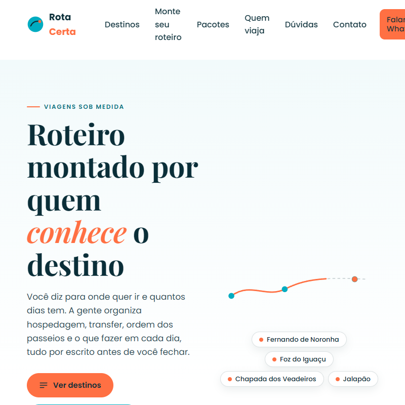
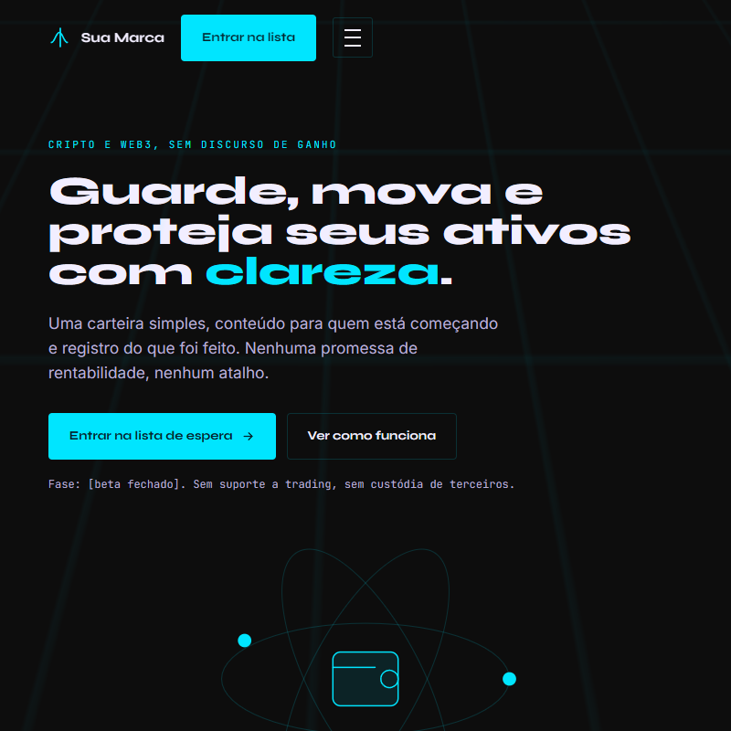

Escopo
Conversa inicial para entender o problema, o prazo e os entregáveis. Você recebe um orçamento honesto antes de qualquer linha de código ser escrita.

Sites, sistemas, apps, vídeos e marketing com processo claro, código próprio e resultado verificável. Um único parceiro do desenho à release — software house em Belém, Pará.
role para explorar
Como entregamos
A Tessumax pensa em manutenção desde o dia 1. Escolha a frente e veja exatamente o que entra na entrega.
Sites que convencem: páginas rápidas, medidas de propósito e prontas para ranquear desde o primeiro dia.
Sistemas sob medida: APIs, painéis e ferramentas internas que resolvem o processo — não um produto de prateleira.
Apps para todos os lados: aplicativo móvel para iOS e Android, PWA offline-first quando o navegador basta e desktop quando o processo pede.
Vídeo e marketing que vendem: a peça publicitária, o corte para cada plataforma e o dado que mostra o que funcionou.
Como funciona
Você acompanha cada etapa e decide junto. Nada de sumir por três semanas e voltar com uma surpresa desagradável.
Conversa inicial para entender o problema, o prazo e os entregáveis. Você recebe um orçamento honesto antes de qualquer linha de código ser escrita.
Desenvolvimento em ciclos curtos com atualizações regulares. Você vê o produto crescendo e testa os fluxos no meio do caminho, não só no fim.
Código no seu repositório com histórico, documentação mínima e suporte pós-lançamento. Outro desenvolvedor consegue continuar sem precisar perguntar.
Produtos no ar
Código aberto, deploy real e resultado que você pode abrir agora mesmo no navegador.
Curadoria
Curadoria de 131 ofertas da Shopee com filtros, wishlist e SEO. Roda 100% no navegador: sem backend, sem servidor para manter, sem dependência externa.
Plataforma
Plataforma com 8 e-books, diagnóstico interativo e ferramentas de negócio. A landing page conduz o visitante por um funil de diagnóstico até a recomendação.
Acervo
Uma amostra do acervo de modelos já publicados — cada um abre no navegador, com link direto.














Estes modelos existem para demonstrar capacidade técnica: são páginas sem identidade visual de cliente. Um site para empresa real é desenvolvido sob medida, seguindo a marca de cada negócio. Ver o acervo completo no GitHub
Stack
Ferramenta escolhida pelo problema, não por moda. Filtre por área para ver onde cada uma entra.
45 tecnologias exibidas
Aviso A stack varia conforme o projeto. Estas são as ferramentas que uso com mais frequência, não uma lista fechada: o que entra em cada entrega é decidido no escopo.
Backend, IA, dados
Frontend, backend
Frontend, backend
Enterprise, APIs
Sistemas, Tauri
UI, componentes
Runtime, APIs
Containers
Banco de dados
Java, APIs REST
CSS, utility-first
Semântica, SEO
Layout, animações
Versionamento
Desktop, Rust
Build tool
Servidores, DevOps
Banco de dados
React Native
Linguagem, scripts
React, produção
Sites estáticos
Animação, timelines
3D no navegador
Arte generativa
Animação vetorial
Motion em React
Vídeo em React
Vídeo em HTML
Edição, legendas, render
Transcrição de áudio
Narração, pesquisa com IA
Auth, dados, realtime
Pagamentos
Pacotes, scripts
QA e automação
Automação headless
Visão computacional
OCR de documentos
Deploy e edge
Design e handoff
SEO, indexação
SEO local no Maps
SERP e backlinks
SEO com dados
Quem faz
Desenvolvedor de produtos digitais em Belém/PA: dados, IA e software sob medida. A Tessumax é a empresa que dá nome a esse trabalho.
Fundador · CEO · Tessumax
Trabalho do escopo à release no mesmo lugar: entender o processo, desenhar a solução, escrever o código e deixar o rastro documentado para quem continuar depois. Os repositórios públicos mostram o método — do planejador de rack ao pipeline de detecção.
Depoimentos
Relatos de quem passou pelo processo — do brief à publicação.
O site antigo não aparecia e eu não conseguia mexer em nada. Em uma semana estava novo, no ar, e eu mesmo troco os textos quando quero.
A campanha saiu com corte para cada rede. Uma produção virou cinco peças, e agora eu consigo ver qual delas traz conversa no WhatsApp.
Mandei o escopo e recebi de volta prazo, valor e o que ficava fora do pacote. Foi a primeira vez que não precisei caçar resposta no meio do projeto.
O código chegou no nosso repositório com README e testes nos fluxos críticos. A equipe continuou sem depender de ninguém.
O painel substituiu três planilhas e um caderno. O fechamento que tomava a manhã inteira agora sai em dois cliques.
O agendamento no celular cortou as faltas. O paciente confirma sozinho e o lembrete chega na hora certa.
Dúvidas
Contato
Diga o problema, o prazo e o que você já tem. A resposta volta com perguntas de escopo real — não com template.